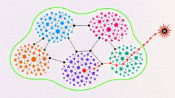
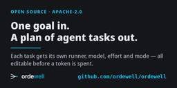
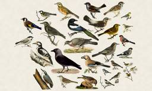

Hacker News: Front Page
フィード

Splash-free urinals: Design through physics and differential equations
Hacker News: Front Page
Article URL: https://academic.oup.com/pnasnexus/article/4/4/pgaf087/8098745Comments URL: https://news.ycombinator.com/item?id=49714735Points: 15# Comments: 7
40分前
Swift 6.4 Released
Hacker News: Front Page
Article URL: https://www.swift.org/blog/swift-6.4-released/Comments URL: https://news.ycombinator.com/item?id=49714239Points: 98# Comments: 39
1時間前
Cartesian – AI 3D Modeling for Design
Hacker News: Front Page
Article URL: https://www.formas.ai/cartesianComments URL: https://news.ycombinator.com/item?id=49713999Points: 34# Comments: 25
1時間前
Closing the IPv6 First-Packet Gap with Grand
Hacker News: Front Page
Article URL: https://labs.ripe.net/author/pouria/closing-the-ipv6-first-packet-gap-with-grand/Comments URL: https://news.ycombinator.com/item?id=49713337Points: 10# Comments: 1
2時間前
The CSS Zen Garden dream shipped
Hacker News: Front Page
Article URL: https://josprague.com/blog/the-css-zen-garden-dream-finally-shipped/Comments URL: https://news.ycombinator.com/item?id=49713262Points: 23# Comments: 9
2時間前

What we have learned at OpenShell applying formal methods to control AI agents
Hacker News: Front Page
Article URL: https://nvidia.github.io/OpenShell-Research/dev-notes/posts/2026-09-10-learning-formal-methods-agent-policy-prover/Comments URL: https://news.ycombinator.com/item?id=49713261Points: 12# Comments: 4
2時間前

GRP-Obliteration: Unaligning LLMs with a Single Unlabeled Prompt 1
1
Hacker News: Front Page
Article URL: https://arxiv.org/abs/2602.06258Comments URL: https://news.ycombinator.com/item?id=49713130Points: 8# Comments: 1
2時間前
Show HN: Check if your IP has appeared in a residential proxy network
Hacker News: Front Page
Article URL: https://haveibeenproxied.com/Comments URL: https://news.ycombinator.com/item?id=49713037Points: 15# Comments: 5
2時間前
The Inference Hardware Revolution of 2026
Hacker News: Front Page
Article URL: https://spectrum.ieee.org/inference-hardware-revolutionComments URL: https://news.ycombinator.com/item?id=49713024Points: 8# Comments: 0
2時間前
Show HN: Panel – A research workspace where the agent can build its own panes
Hacker News: Front Page
Article URL: https://github.com/greentfrapp/panelComments URL: https://news.ycombinator.com/item?id=49712621Points: 29# Comments: 4
3時間前
Show HN: Capsule – Single-file web apps that save their data into SQLite 1
Hacker News: Front Page
Hey HN,I always had the problem that building HTML pages is really simple now, but trying to save data required hosting it somewhere, and sharing it afterwards was not easy. Over the last few months, I've been building an app called Capsule (it’s also the file extension name) written in Rust with Tauri 2.0 that allows packing an HTML app and its data into a single SQLite file.The HTML file and any related assets are directly embedded in the database. User data can either be saved as a localStorage key/value store or via a MongoDB-inspired collections API as documents, saved in a table in the file. You can also save other assets, like PDF files or images, directly in the database to keep different documents together. All data can be easily exported to CSV or JSON if needed.Privacy and security were a big priority for me, so documents cannot do anything out of the box. They don’t have direct access to the file system and they require permission to access the internet. The permission mode
3時間前

Show HN: Ordewell – turn one goal into an ordered plan of coding-agent tasks
Hacker News: Front Page
Article URL: https://github.com/ordewell/ordewellComments URL: https://news.ycombinator.com/item?id=49712276Points: 30# Comments: 25
3時間前
Show HN: Hacking a $20 4G wireless hotspot into a texting device
Hacker News: Front Page
Article URL: https://bkovac.github.io/modem-thing/Comments URL: https://news.ycombinator.com/item?id=49712102Points: 101# Comments: 14
4時間前
Java 27 1
Hacker News: Front Page
Article URL: https://mail.openjdk.org/archives/list/announce@openjdk.org/thread/ORGGLMN75HFEWP7YL3ZLGHLYHVIBJDYT/Comments URL: https://news.ycombinator.com/item?id=49712041Points: 244# Comments: 184
4時間前

Show HN: An e-ink frame that hears birds and draws them as 1800s illustrations 1
Hacker News: Front Page
Article URL: https://github.com/arnegiacomo/fuglerammeComments URL: https://news.ycombinator.com/item?id=49711544Points: 619# Comments: 97
4時間前
25 Years of Mass Surveillance Is Enough
Hacker News: Front Page
Article URL: https://www.schneier.com/blog/archives/2026/09/25-years-of-mass-surveillance-is-enough.htmlComments URL: https://news.ycombinator.com/item?id=49710883Points: 501# Comments: 158
5時間前
Suspected sabotage causes major Netherlands rail disruption
Hacker News: Front Page
Article URL: https://www.bbc.com/news/articles/c8ly49w9g1edoComments URL: https://news.ycombinator.com/item?id=49710253Points: 351# Comments: 340
6時間前
Let's make quality the norm again
Hacker News: Front Page
Article URL: https://www.forbrukerradet.no/short-life/Comments URL: https://news.ycombinator.com/item?id=49710109Points: 114# Comments: 129
7時間前
How much of F-Droid is LLM generated?
Hacker News: Front Page
Article URL: https://tintotint.eu/whacky-corner/f-droid_slop/Comments URL: https://news.ycombinator.com/item?id=49710015Points: 78# Comments: 102
7時間前
Alternatives to MinIO for single-node local S3
Hacker News: Front Page
Article URL: https://rmoff.net/2026/01/14/alternatives-to-minio-for-single-node-local-s3/Comments URL: https://news.ycombinator.com/item?id=49709381Points: 174# Comments: 76
9時間前